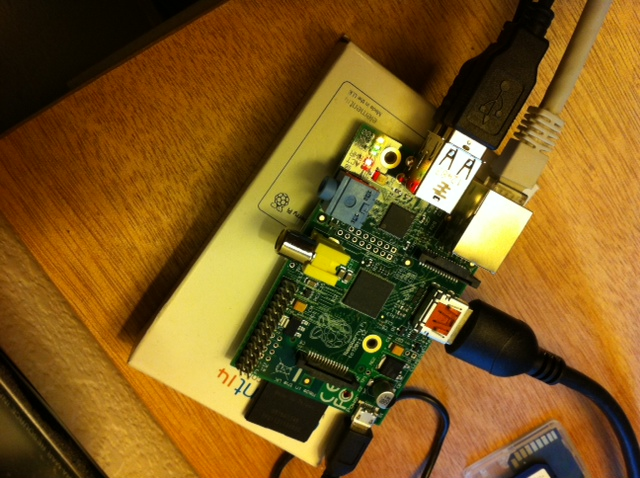
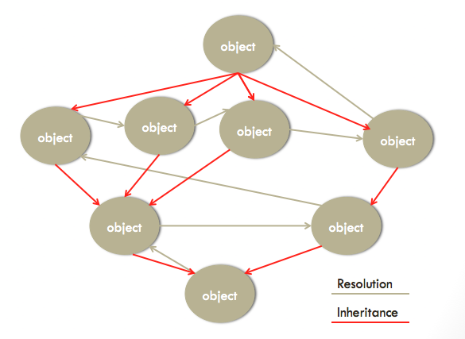
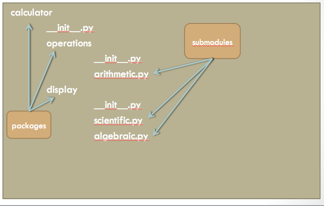

Python I
Revision 04.21.13
NLC Info
-
Rackspace parking sticker works
-
Racker breakroom marked 'Laundry' on 1st floor
-
Speeding on campus = easy ticket
-
Must go off property to smoke
-
Please sign in each day. Class starts at 08:30
Paperwork
-
NLC registration
-
RU roster
-
Email signup sheet
-
Companion Text: Python Pocket Reference, 4th Edition, Mark Lutz, ISBN 978-0-596-15808-8
Introductions
-
Instructor Contact Info
-
Introductions
-
Any previous programming?
-
Why did you sign up?
-
Define success for you in this course
Lab Info
-
Lab machines act as a pass through to the NLC cloud (CentOS VM's)
-
ssh -l student -p 401XX nlccloud.edgecloud.com
(use 192.168.3.10 on campus)
-
scp -P 401XX local_file student@nlccloud.edgecloud.com:class/remote_file
scp -P 401XX student@nlccloud.edgecloud.com:class/remote_filename .
-
Available 24x7 during class
Next Lab Environment?
-
Raspberry pi: $35 + $10 power supply + $6 flash card
-
Attaches to USB kybd/mouse, ethernet, HDMI video, audio
-
Debian or other flavor linux
-
http://raspberrypi.org

This Course
- Assumes basic programming concepts from Foundation I/II or experience
- What it is:
- Python (2.7 level) syntax & semantics with an eye toward Python 3 migration
- Complete language through classes, minus a few esoteric features
- Python idioms and style
- What it's not:
-
Math or graphics, Python internals, Threading, Persistence, other advanced topics
Short Python History
- Written circa 1990 by Guido van Rossum (Google until 12/12, then Dropbox)
- Goals were a new general purpose language with good exception handling, clean syntax, good access to underlying OS
- First released (posted to USENET) Feb 1991
- Multiple releases since then; Version 3 is current
- Driven by PEP (Python Enhancement Process) and managed by the Python Software Foundation (PSF) since 2001
Why Learn Python?
-
An in language at the moment and growing in popularity
-
Very acceptable performance (CPython impl) especially compared to some other interpreted languages e.g.ruby
-
Computer Science programs are starting to adopt as a defacto CS learning language
- Probably the easiest, full-featured HLL to learn and use
- You can get paid a lot?
Python Documentation
- Python is WELL documented, internally and externally
- Most important treasure trove is http://docs.python.org
- Other resources:
- http://learnpythonthehardway.org/
- http://www.codecademy.com/learn
- http://github.com/gregmalcolm/python_koans/wiki
- http://udacity.com
- Python CBT Nuggets
Two Ways to Run Python
- For quick and easy interactive experimentation: ipython
- Easy -- can just start typing python syntax
- Immediate results (and tracebacks if error)
- Good help system and other features
- See http://ipython.org
- For production and running scripts: python
Pythonic Style
- Pythonistas Live By:
The Zen of Python (PEP20)
Beautiful is better than ugly.
Explicit is better than implicit.
Simple is better than complex.
Complex is better than complicated.
Flat is better than nested.
Sparse is better than dense.
Readability counts.
Special cases aren't special enough to break the rules.
Although practicality beats purity.
Errors should never pass silently. Unless explicitly silenced.
In the face of ambiguity, refuse the temptation to guess.
There should be one-- and preferably only one --obvious way to do it.
Although that way may not be obvious at first unless you're Dutch.
Now is better than never. Although never is often better than *right* now.
If the implementation is hard to explain, it's a bad idea.
If the implementation is easy to explain, it may be a good idea.
Namespaces are one honking great idea -- let's do more of those!
Python Indentation
- Critical to correct code function
- Indicates program block association
- Use 4 spaces per level (per PEP8)
- Other style rules apply (covered later)
Python Operators
+ - * ** / // %
<< >> & | ^ ~ <
>> <= >= == !=
Are the same operators you know and love in other languages
Python Delimiters
( ) [ ] { }
, : . ` = ;
+= -= *= /= //= %=
&= |= ^= >>= <<= **=
$ and ? are invalid in Python except in data strings.
Identifier Naming Conventions
- Lower case with _ separators : most variable and function identifiers
- Leading _ or __ : special identifiers
- All upper case : constants
- Camel case : class names
- Mixed case : variable and function identifiers (less common)
Special Identifiers
- Leading underscore signifies intent to keep that identifier for internal use only: _var
- Two leading underscores means (to the interpreter) mangle the identifier i.e. insert the class name before the identifier to make it harder to re-use by accident
What is a Module?
- Python modules are the basic building blocks of Python source code.
- A module is a file ending in .py containing Python source code
- Can use identifiers from other modules by importing them
- Lots of modules come with Python distribution, and lots more come as packages downloadable from the net
Anatomy of a Module
- #!/usr/bin/env python
- # -*- coding: utf-8 -*-
- Module docstring
- Import(s)
- Statements (your code)
Basic Types
- What is a type?
- Basic types:
- int
- float
- string
- None
- bool
tuple Type
- Tuples are ordered sequences of objects enclosed in parentheses
- Objects separated by commas
- Cannot be changed (they are immutable)
- Can contain any type of object
- Can be sliced (remember, they're ordered)
- A one element tuple is formed by (element,) using the comma operator
list Type
- Lists are essentially mutable tuples
- Enclosed in square brackets
- One of the two workhorse types of Python
- Lots of operations
dictionary Type
- Dictionaries are a composed of key:value pairs
- Enclosed in curly braces
- The key expression is mapped to its associated value expression
- Not an ordered sequence
- Not sliceable
set Type
- Sets are groups of immutable objects with unique values i.e. no duplicates
- The set itself is mutable, but not the objects within it
- Enclosed in curly braces just like a dictionary
- Slicing is not allowed (why?)
- Set operations are quite powerful
Subscriptions & Slicings
- Sequences are ordered set of objects and can be retrieved in an ordered manner
- A subscription is a single member of a sequence
- A slicing builds a new sequence by slicing out parts of another sequence
- Uses a beginning index, ending index, both, or none
- An index can be negative, which wraps around to the beginning
Complex Operations
- Partial list:
- list: append, extend, sort, index, pop, in
- dict: keys, iterkeys, values, itervalues, items, iteritems, popitem(), in
- set: difference, union, intersection, symmetric_difference, add, remove, pop, in
print Statement
- The print statement prints values of string objects to the output stream
- Objects are comma separated if more than one
- In Python 2, print is a statement; in Python 3 print is a built-in function (can also use print function in Python 2)
Operator Precedence
- What's an operator? What's an operand?
- Operators have precedence
- Order of evaluation can be overridden by parentheses
- Python precedence rules are similar to other languages
Bitwise Logic Operators
- a AND b => 1 if a and b == 1, else 0
- a OR b => 1 if either a or b == 1, else 0
- a XOR b => 1 if a != b, else 0
- NOT a => 1 if a == 0, else 0
- AND mask is used to turn off bits
- e.g. 0b11110000 & 0b11001010 == 0b11000000
- OR mask is used to turn on bits:
- e.g. 0b11110000 | 0b11001010 == 0b11111010
- NOT is used to invert bits:
- ~ 0b11110000 == 0b00001111
Statements
- Come in 2 flavors: simple or compound
- Simple statements are single keyword, usually 1 per line (but ; can be used to separate multiple simple statements on 1 line)
- Compound statements are multi keyword and therefore multi line
- Run in suites (statement groups) AKA clauses or blocks when indented
Assignment Statements
- An assignment statement binds (connects) identifier on left to an expression on right
- An augmented assignment statement does an operation before it binds the answer back to the identifier
- Simply a way of combining two statements into one
if Statement
- The if statement is a fork in the road: one of the forks is taken depending on a comparison expression
- Each intermediate fork (elif) has a suite of statement(s) to run if that fork is taken
- The last fork (else) does not have a comparison, and is used when all other comparisons are False
Comparisons
- Every language supports comparison of (same-type) values which results in a boolean
- Different types should be converted to the same type before comparison.
- In a few cases, Python does this for you (e.g. numbers)
- Usually used at decision points to control flow
for Statement
- The for statement provides a method to loop by iterating over a set of values
- At end of loop, the else block is run, if any
- An iterator provides the next value every time it's called (until empty)
- A sequence (e.g. tuple or list) or some other object can provide the iterator
- One (or more) variables receive a new item from the iterator at the beginning of each loop
while Statement
- while statement provides a means of looping until the test (expression) becomes False
- At end of loop, the else block is run, if any
- Some things can stop the while prematurely: e.g. break or continue statement, or an exception
break & continue Statements
- break gets out of a for or while loop early
- continue restarts the for or while at the beginning of the next loop
del Statement
- The del statement unbinds (removes pointer) between an identifier and its object
- Can also remove an attribute, subscription, or slicing
assert Statement
- assert statement provides a way to stopping execution if the wheels have come off!
- The assertion is an expression that should ALWAYS evaluate to True. If not, something is very wrong, so an AssertionError exception is thrown
- Optimized bytecode (command line O option) does not do assertion testing
pass Statement
- The pass statement says do nothing.
- Used if there is a syntactic requirement to have a statement
global Statement
- The global statement says skip the local namespace and look in the global namespace first
- Should seldom be necessary except for flags (else refactoring may be indicated)
Conditional Expression Statement
- true_value if expression else false_value
- Brought to you by PEP308
- Reference: http://www.python.org/dev/peps/pep-0308/
Functions
- Arguments to functions: positional and keyword
- Mini-lab: Interpret these function declarations
- def t1(a, b):
- def t2(a, b, c=4):
- def t3(a, b, c=4, *d, **e):
Functions
- How do you call a function?
- Positional args go first
- Directly: 1,2,3
- Unpacking an existing tuple or list by putting * before the identifier e.g. *my_tup
- Keyword args go last
- Directly: f=6, g=7
- Unpacking an existing dict by putting ** before the identifier e.g. **my_dict
- Keyword args convert to positional args if not enough positionals are given
return Statement
- The return statement returns value(s) back from a function to the caller
- If no return is specified, then None is returned
raw_input Function
- Use raw_input() to get keyboard input from user
- Prompt argument
- changes to input() in Python 3
Built-in Functions
- Python has a number of built-in functions (module __builtin__) which are simply wrappers for C functions
- Built-in functions perform frequently used or high performance tasks
- Reference: Pocket Guide p. 102
os Module
- Operating system and related utilities
- Reference: Pocket Guide p.141 OR
- http://docs.python.org/library/os.html#module-os
os.path Module
- Path-related utilities
- Reference: Pocket Guide p. 153 OR
- http://docs.python.org/library/os.path.html#module-os.path
sys Module
- sys module python interpreter interaction and variables
- Reference: Pocket Guide p.133 OR
- http://docs.python.org/library/sys.html#module-sys
Standard Library
- The Python standard library has many modules available for import besides os and sys. Some are listed below. For a full set, see http://docs.python.org/py-modindex.html
Stringify An Object
- All objects in Python can be stringified
- Use str(obj) which is preferred
- Another option is unicode(obj) in Python 2 (Python 3 does not have separate unicode handling for strings)
- Back ticks are also available, but seldom used
String Literals
- String literals:
'string' or "string", usual escaping rules
u'string' unicode string
b'string' normal string in Python 2, bytes string in Python 3
r'string' raw string: leaves escapes intact
"""string""" triple quoted string
string1 string2
String Methods
- The string type has many useful methods, which are recommended over the string module functions (for efficiency)
- Reference: Python Guide p. 26
String Formatting
- The % string formatting approach:
- "string with %format exp" % (arg1)
- Considered the old (Python 2) style
- Reference: Pocket Reference p.22
String Formatting
- The new string.format() method approach:
- "string with {format expression}".format(arg1)
- Considered the new Python 3 style, but old style will live on for a long time
- Reference: Pocket Reference p.23
List Comprehensions
- Convenient way of initializing a list with an arbitrary expression
- Allows control of element source, transformation, and filtering all in one operation:
- [insert exp for var in iter if filter exp]
- Reference: Pocket Guide p.38
Dict & Set Comprehensions
- Shorthand ways of initializing a dictionary or set respectively
- Same form as list comphrehension but braces instead of square brackets:
- {insert exp for var in iter if filter exp}
- Note: for dict, insert expression must generate k and v
- Reference: Pocket Guide p.40
Iterators
- Iterators know how to return the next item when called
- Iterator object is identified by __iter__() and next() functions
- StopIteration exception when no more items
- Very common. Almost everything seems to implement the iterator protocol
- Used by for statement and many functions
yield Statement
- yield is similar to return
- Suspends execution of the called function instead of ending the function
- On the next call to the function, yield picks up where it left off
- All identifier values holding the same values (vs. return which loses its identifier values)
- Reference: Pocket Guide p.68
Generators
- Generators are co-routines that return a generated (according to your algorithm) set of values (see PEP255)
- Identified by a function that uses the yield statement
- Generators are just lazy iterators that don't generate a result until needed.
- Saves memory
Generator Expressions
- Same syntax as a comprehension, but enclosed in parentheses
- Shorthand way of writing a generator function to do the same
- Called with next() just like an iterator
- Saves memory: does not pre-build returned object
Exceptions
- Exceptions are objects for events that happen asynchronously
- Handling an Exception involves a try/except statement
- Many Exceptions are built-in, but programmers can create their own custom exceptions too
- Custom Exceptions should be based on the Exception class
Exceptions
- Exceptions should take a single string arguments saying what happened
- Lots of built-in Exceptions
- Reference: Pocket Guide p.124
try Statement
- The try statement protects a suite of statements that may need an Exception caught in an except clause
- The else clause runs if an Exception doesn't happen
- The finally cause always runs no matter what happens
Duck Typing
- If it walks like a duck, talks like a duck...
- Now that we know about Exceptions, the Pythonic way to check an objects type is to use a try block
- Call a method or use an 'attribute' as you would expect to use it. If the test works without an Exception, the object may be a duck
- If the object isn't ducky enough, catch the Exception and output a nice message or give a chance to retry
- Types can also be checked with type(), issubclass(), and isinstance()
Pythonic Style
- Use is or is not when comparing to True, False, None and other singletons i.e. don't use ==
- Always implement all 6 comparison operators if implementing any of them: __eq__, __ne__, __lt__, __le__, __gt__, __ge__
- Define your own module and package-specific exception class(es) using Exception as a base (in Python 2)
Pythonic Style
- Use multiple except clauses for specific exceptions instead of a catch all except clause (bare except clause will catch even SystemExit and KeyboardInterrupt).
- Function parameter keywords should default to None instead of mutables. Immutables are ok
- Run only the minimum code necessary in a try block
- Use the with statement wherever possible
Pythonic Style
- Use .startswith() and .endswith() for prefix and suffix checking
- Use duck typing, type(), isinstance(), or issubclass() to check the type
- Remember, empty sequences are False. Use that fact in comparisons
- Minimize use of global
- Prefer string methods to the string module.
- The built-in functions are fast. Know them and use them
Docstrings
- Docstrings provide a convenient way to document your code inline
- Docstrings are so important they are saved in the bytecode file
- Docstrings allow other software and other programmers to find out what your code does and how it's used
- Docstring conventions are standardized. See PEP257
Docstrings
- Docstrings are the first item after the boilerplate or header
- Docstrings become the __doc__ attribute for the object they describe
- All packages, modules, functions, and classes should have docstrings
- Come in 2 flavors: one-liner and multi-liner
Docstrings
- One-liner docstrings:
- Have triple quotes around them, and are on the same line
- Have no blank line before or after the docstring
- End with a period
- Summarize what the code does, and any arguments
Docstrings
- Multi-line docstrings:
- Have triple quotes around them on their own lines, and blank lines before and after
- Start with a summary line followed by another blank line, then the usage details
- Explain dependencies and exceptions thrown or caught
- End with a period
Scope & Binding
- Since everything in a Python program is an object, should all objects be available everywhere?
- Bindings are not global by default, but instead are restricted to 'namespaces'
- Namespaces are used for modules, functions, and 'classes' (new types)
Scope & Binding
-
Block: any Python code executed as a unit
e.g. a module, def, class, script file, script command, or interactive command
-
Scope: the space where a identifier is visible because of its location in a block.
Contained blocks can see identifiers of containing blocks
-
Namespace: the set of identifiers in a function, class, or module.
Can be local, global, or built-in.
Inward identifiers hide outward identifiers of the same name
Scope & Binding
- Identifiers in a module or function (def) are visible to inner functions
- Class identifiers are not visible to inner functions (methods) without prefixing with class name
- Identifiers are local, nonlocal (Python 3 only), global, or built-in
Scope & Binding
- global statement must precede use of a global identifier
- Identifier resolution binds an identifier using the nearest enclosing namespace: local, enclosing local, global, builtin
Oh Dear (OOD)
- Classes
- Three legged stool:
- Inheritance
- Encapsulation
- Polymorphism
Method Resolution Graph

Classic vs. New Classes
- Classic-style classes do not inherit from object, and do not become a new type
- New-style classes (Python 2.2+) inherit from a built-in type or object and become a new user defined type with type==class
name
- Classic class instances are type==instance which breaks the class == type rule
Classic vs. New Classes
- New classes have different method resolution order (width-first v. depth-first)
- Beware: Python 2 class statement still defaults to classic classes unless a new-style class or object is explicitly used as the base class
- Classic-style classes go away entirely in Python 3
- Always use new-style classes in new code
Instances
- instance = classname(args) creates a new instance of class using the classname template
- An instance has all attributes of the class, both data and method, but is a separate object with its own namespace
- Arguments to the instance creation are passed to the class __init__() method for initialization
Think POOP
- Instance attributes are accessible with instance.attrib
- Instance functions (known as methods) are accessed as instance.method()
- Class attributes are accessible with class.attrib
- Instances do NOT automatically access class identifiers. Must use class name
POOP For Real
>>> class Dog(object):
... breed = 1
... def __init__(self):
... self.breed = 3
...
>>> Dog.breed
1
>>> my_dog = Dog()
>>> my_dog.breed
3
>>> id(Dog.breed)
4298191048
>>> id(my_dog.breed)
4298191000
>>> del my_dog.breed
>>> dir(my_dog)
['__class__', '__delattr__', '__dict__', '__doc__', '__format__',
'__getattribute__', '__hash__', '__init__', '__module__', '__new__',
'__reduce__', '__reduce_ex__', '__repr__', '__setattr__', '__sizeof__',
'__str__', '__subclasshook__', '__weakref__', breed']
>>> my_dog.breed
1
Why?
Modules & Packages Redux
- Packages give Python the depth of function to compete with any other language
- According to the cheese shop, there are currently 30,000+ Python packages available for import by your code
- Don't re-invent the wheel.py Check http://pypi.python.org before you dig
Modules & Packages Redux
- Packages are groups of Python modules in a form suitable for runtime access by the interpreter
- Must be on the PYTHONPATH environment variable (sys.path)
- A special file called __init__.py on each level of hierarchy
import & from Statements
- To make a set of identifiers in another module available for use by your module, use import or from
- import pulls in identifiers from module(s) but the module name must be used as a prefix (only the module name is added to local namespace)
- from pulls in identifiers from modules but avoids need to prefix with the module name (identifier is added to local namespace)
Dotted Names
- A dotted name specifies the package/module path required to access a particular .py file.
- A dotted name like django_jenkins.management.commands.util is really saying:
Find the django_jenkins package on sys.path, then within that
for a package called management, then within that for a package
called commands, then the util module
Module Types
- Modules come in (3) flavors: pure, extension, and package
- Pure modules are all-Python source
- Extension modules are shared objects such as .so or .dll and written in non-Python
- Package modules are complex modules containing sub-modules and meta data for package management
- See http://docs.python.org/py-modindex.html for the Python root module index
The Calculator Package

Module Search
- Python searches for modules in a definite order:
- Current directory
- PYTHONPATH directories
- Installation default directories, if any
- Reference sys.path for the actual list
pip
- pip is the newest python package manager tool
- pip [un]install
- pip search
- --upgrade option for existing packages
- target is site-packages directory
site.py
- The site module is automatically imported at python startup (unless -S option)
- Tells Python where additional site-specific packages live (if any)
- Adds site-specific search paths to the module search path (sys.path) using a path configuration file (.pth)
- Path configuration files list additional directories, one per line, needed by
Your Own Package
- To build your own Python package, arrange your files in a package-ready directory structure with __init__.py in appropriate places, then use distutils module to create a working package ready to upload to the cheese shop
- http://guide.python-distribute.org/creation.html for more details
with Statement
- The with statement is used to run a suite under a context manager
- Special methods __entry__() and __exit__() are called to setup and takedown a context
- Common for opening a file, which auto-closes the file handle
File Processing
- one_line = fh.readline() # just until next \n
- a_list = fh.readlines() # all chars by line into list
- fh.write(s) # write string s to file
- fh.writelines(l) # write list l to file
- fh.seek(offset) # seeks to offset in file
Debugging
- Some Vocab:
- Single step: run one line of code and stop
- Step in: trace into a function
- Step out: return from tracing a function
- Breakpoint: run normally until here, then stop
- Watch list: monitored variables
- Development:
- 80% solution is print statement
- pudb http://pypi.python.org/pypi/pudb/
- Integrated GUI IDE debugger
- Production: instrument with a logging module
Debugging
- Common debugger commands:
- h(elp)
- w(here)
- b(reak)
- s(tep)
- n(ext)
- r(eturn)
- c(ontinue)
- l(ist)
- p expression
- run [args ...]
- q(uit)
Test Driven Development
- Best early detection of bugs:
- Pair programming
- Continuous Integration
- Test Driven Development
- Test Driven Development (TDD) says essentially:
- Write a test that for a proposed feature and verify it fails
- Write the minimal amount of code to make the test pass
- Refactor
- Repeat
unittest Module
- Derive a class from unittest.TestCase
- For a test runner, unittest.main() is the default, or roll your own
- Simple test to see if two values were multiplied correctly:
import calculator.operations.arithmetic as arith
import unittest
class TestCalculations(unittest.TestCase):
def test_multiply(self):
""" test multiply 2 * 2 """
testVal = arith.mult(2,2)
self.assertEqual(testVal, 4)
if __name__ == "__main__":
unittest.main()
unittest Module
- If a test fixture is needed to setup/takedown the calculator for each test, we can add methods setUp() and tearDown()
- The naming standard is that each test method name start with test
- For unit tests, the TestCase class offers (3) primary verifiers:
- assertEqual(): result is equal to the value we expect
- assertTrue(): result is a True assertion
- assertRaises(): result is the Exception we expect
unittest Module
- There are more assert methods to make life easy:
unittest Module
- Building a test harness involves grouping all TestCase test* methods for the package together to run sequentially:
unittest Module
import unittest
from calculator.test import operations_package as op
from calculator.test import display_package as dp
if __name__ == "__main__":
ops_suite = op.TestOperations().suite()
disp_suite = dp.TestDisplay().suite()
all_tests = unittest.TestSuite([ops_suite,disp_suite])
result = unittest.TestResult()
print "\nStarting calculator test suite:", \
all_tests.countTestCases(),"tests"
all_tests.run(result)
print "...Errors..."
if result.errors:
print result.errors
else:
print "None"
print "...Failures..."
if result.failures:
for fail in result.failures:
print "\n=================================\n"
print fail[0]
print fail[1]
else:
print "None
References & Bibliography
- Python Style Guide
http://python.org/doc/essays/styleguide.html
- Refactoring (Martin Fowler, ISBN 0-201-48567-2)
- Python Pocket Reference, 4th edition (Mark Lutz, 978-0-596-15080-8)
- Think Python (Allen Downey, ISBN-10: 1466367296)
References & Bibliography
- Python Software Foundation http://python.org
- http://wiki.python.org/moin/PythonBooks
- http://python.org/editors